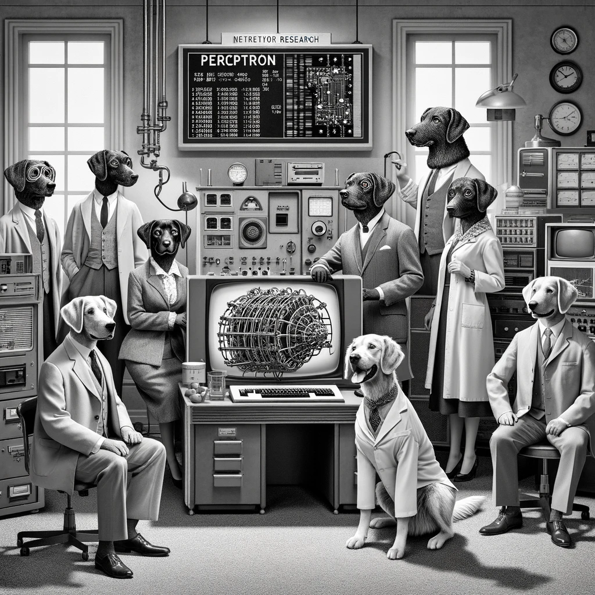
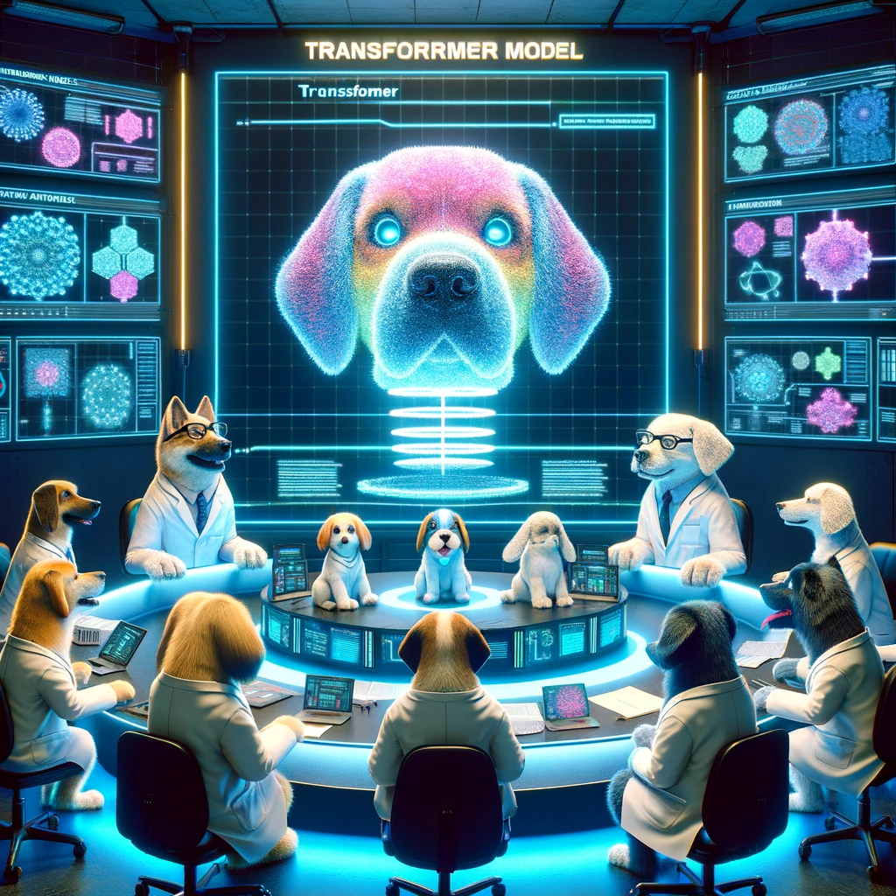

Explore the key milestones in the evolution of machine learning from its inception to the present day.
Timeline of Key Developments
- 1950s - Early Foundations:
- 1950: Alan Turing publishes "Computing Machinery and Intelligence," proposing what is now called the Turing Test.
- 1952: Arthur Samuel develops the first computer learning program, which was a game of checkers.

- 1960s - Concept of Neural Networks:
- 1961: The first step toward modern AI as Frank Rosenblatt proposes the Perceptron, an early neural network.
- 1967: The nearest neighbor algorithm was written, which allowed computers to begin using basic pattern recognition.
How Neural Nets Work
The Perceptron Explained is a page with examples and a simple neural network code sample - 1980s - Revival and Expansion:
- 1980: The concept of backpropagation is popularized by Geoffrey Hinton and others, improving training for multi-layer networks.
- 1985: Terry Sejnowski and Charles Rosenberg develop NetTalk, which learns to pronounce English text aloud using a neural network.
- 1990s - Support Vector Machines and Advances in Theory:
- 1995: Support Vector Machines (SVMs) are developed, providing a new generation of learning algorithms.
- 1997: Long Short-Term Memory (LSTM) networks are introduced by Hochreiter & Schmidhuber, which significantly improve recurrent neural network capabilities.
- 2000s - The Era of Big Data:
- 2006: Geoffrey Hinton et al. introduce concepts of deep learning in neural networks with deep architectures.
- 2009: Fei-Fei Li launches ImageNet, a large visual database designed for use in visual object recognition software research.
- 2010s - Deep Learning Breakthroughs:
- 2012: AlexNet wins the ImageNet challenge, significantly outperforming the second-place competitor, which catalyzes the focus on deep learning in the AI community.
- 2016: Google's AlphaGo defeats Lee Sedol in Go, a milestone for AI in complex problem solving.
- 2017 - Transformers Revolution:
- 2017: The paper "Attention Is All You Need" by Vaswani et al. is published, introducing the transformer model, which uses self-attention mechanisms to significantly improve the efficiency of training language models.

- 2018 - Advancements in Natural Language Processing:
- 2018: BERT (Bidirectional Encoder Representations from Transformers) is developed by researchers at Google. This model sets new standards for a variety of NLP tasks, including question answering and language inference.
- 2019 - GPT-2 and the Rise of Generative Models:
- 2019: OpenAI introduces GPT-2, a large transformer-based language model known for its ability to generate coherent and contextually relevant text on a wide range of topics.
- 2020 - AI Ethics and Regulation:
- 2020: AI regulation begins to take shape with the European Union proposing the first legal framework for ethical AI use, focusing on transparency, accountability, and accuracy.
- 2021 - Foundation Models:
- 2021: The concept of foundation models is proposed, characterized by large-scale models trained on broad data at scale that are adaptable to a wide range of tasks.
- 2022 - Advances in Multimodal AI:
- 2022: AI models that can understand and generate multiple forms of data (text, image, video) simultaneously become more prevalent, enhancing capabilities in applications from autonomous vehicles to content creation.
- 2024 - Personalized AI:
- 2024: Advancements in personalized AI systems provide customized health diagnostics, learning supports, and financial advice, making artificial intelligence more directly applicable to individual daily needs.